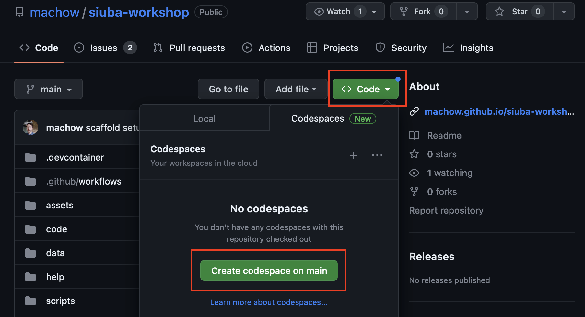
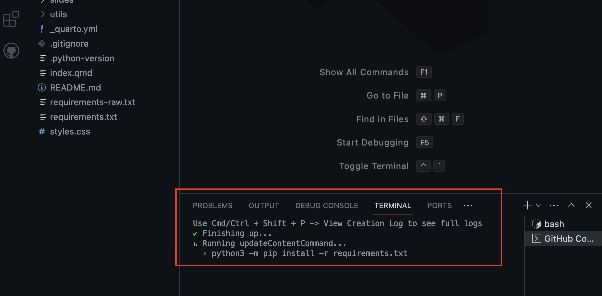
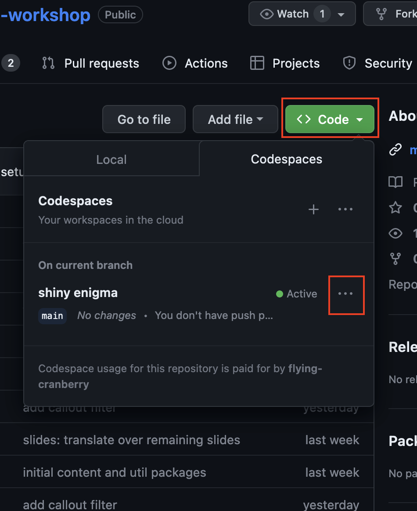
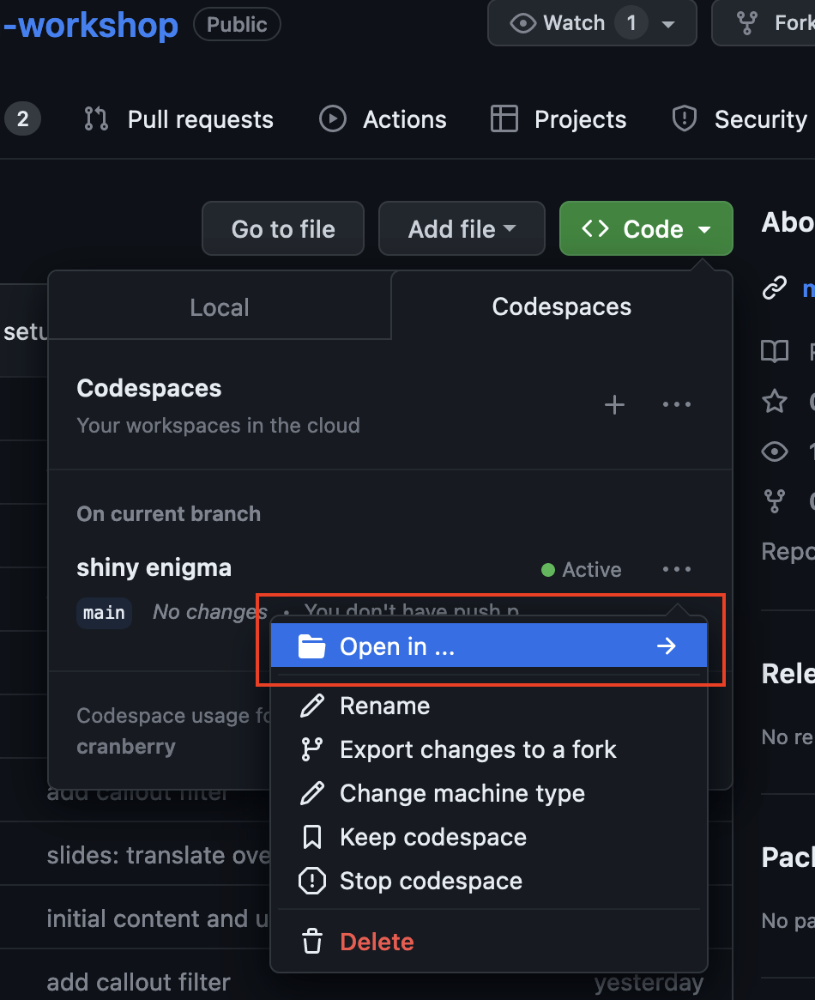
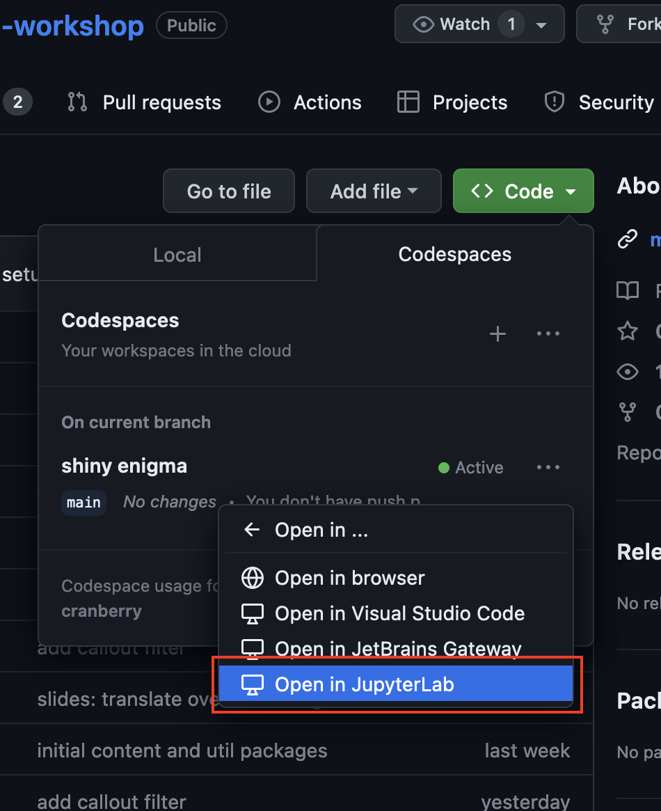
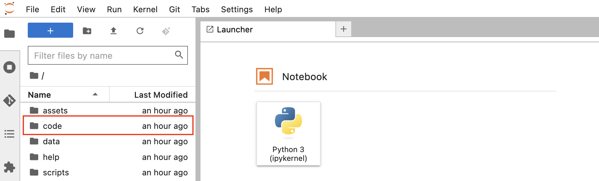
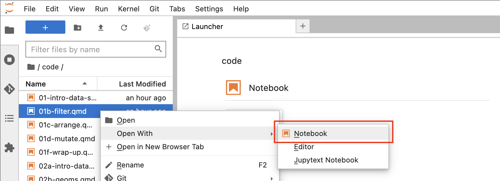
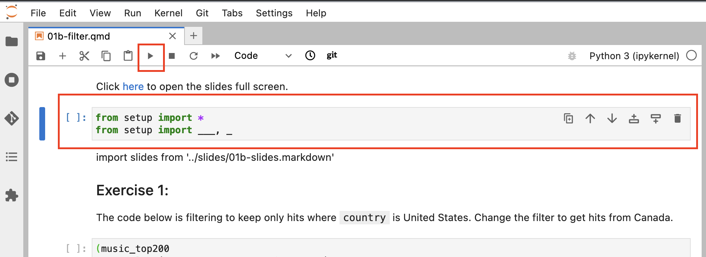
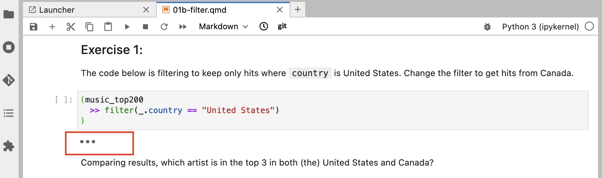
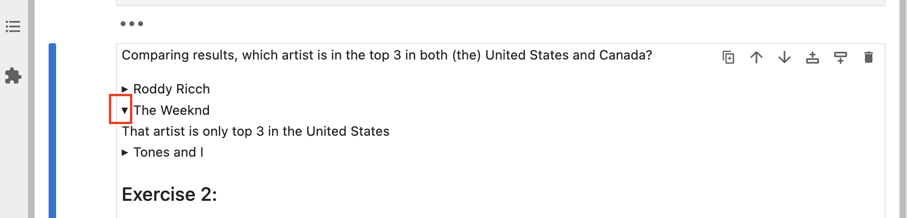

Setup
Opening the Workshop in a GitHub Codespace
- Navigate to the GitHub repository for the workshop, click the
< > Codedropdown, and selectCreate codespace on main

- Your codespace will initialize. Once done, you’ll get dropped into a browser version of VS Code. Stay on this page until you see that the terminal has finished installing
requirements.txt

Once that’s finished, exit VS Code and return to the GitHub repository for the workshop
Click back into the
< > Codedropdown, find the codespace that you just created, and click on the three dots next to it. ClickOpen in ...and selectOpen in JupyterLab



Using JupyterLab for the Code Exercises
- Once dropped in JupyterLab you’ll see a file browser to the left. To open the interactive exercises as notebooks, navigate to the
Codefolder.

- To open a lesson, right click on the file and select
Open With–>Notebook

- From here, you can interact with and run the code cells. To run a code cell, click the cell and then the
Runbutton at the top of the file (or clickctrl+enter). Start by running the import cell at the top of the file.

- Throughout the notebook you will see cells with prompts to complete a query. You can see their solutions by clicking on the three dots below the prompt cell.

- Throughout the notebooks you will also see multiple choice questions related to the data exercises. You can see their solutions by clicking on the toggle next to them.

keep everything below?
- table of contents
- a little background on quarto
Lesson notebooks
- contain slides and exercises
- can open on the website (link to one)
Slides
- can open in speaker view to see notes